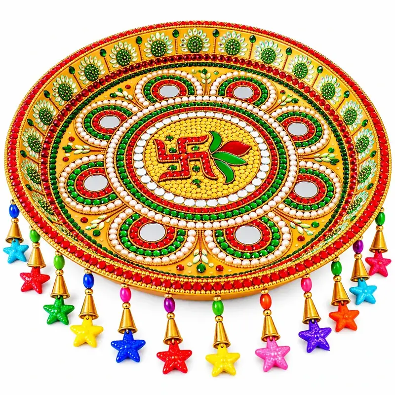

Golden Swastik Leaf Motif & Beaded Latkan Steel Pooja & Aarti Thali
Order
Payment
Delivery
Product Details
Description
The Golden Swastik Leaf & Latkan Pooja Thali blends warm golden brilliance with intricate micro-bead artistry on a 12-inch stainless steel platter. At its heart, a luminous yellow-bead-filled medallion holds a red-stone Swastik paired with an auspicious red-and-green leaf motif, encircled by mirrors, pearls, and eight scalloped mirror arches.
Along the raised rim, delicate floral kundan motifs and a crimson crystal ring frame the platter, while colorful star latkans with golden bells hang gracefully from the lower edge. A vibrant choice for auspicious beginnings, Tilak, and festive gifting.
- 12-inch heavy stainless steel plate in radiant golden finish.
- Yellow micro-bead center featuring a red Swastik and red-green leaf motif.
- Eight scalloped mirror arches layered with pearls, green and red stones.
- Multicolor star-shaped latkan tassels with golden bell caps.
- Handcrafted in Jodhpur, Rajasthan with water-resistant stone bonding.
Material and care
The base is stainless steel. The decorative surface can be gently rinsed or wiped with water, but it is not designed for rough cleaning. Do not scrub, brush, soak aggressively, or drop the thali. Dry gently after cleaning to help protect the mirror pieces, stones and finish.
What's included?
One decorated 12-inch puja thali. Other products or accessories shown in lifestyle photographs are not included unless explicitly confirmed before ordering.
Shipping and returns
Listed price is ₹900 per piece plus India Post Speed Post shipping charges. Confirm shipping charges and dispatch timing on WhatsApp before payment. Please review the Shipping & Returns policy before placing an order. This website does not collect online payments.
Frequently asked questions
How is this design different from the other Golden Swastik Latkan thali?
This design features a yellow micro-bead-filled center with a red-and-green auspicious leaf motif beside the Swastik, whereas the other golden thali has scattered green stones around the Swastik.
Is the yellow beadwork in the center safe for placing a ghee diya?
Yes, the beads are firmly bonded, and placing a brass or steel diya holder on the flat center or inside one of the mirror arches works safely.
Can I order this golden thali for a Haldi or Mehendi ceremony?
Absolutely! Its golden-yellow theme and colorful star hangings are tailor-made for Haldi, Mehendi, and Sangeet welcome rituals.
Can I customize the latkan colours or add matching katoris?
Yes, tap BUY NOW to ask on WhatsApp about adding matching decorative katoris (₹100/pair) or custom colour requests.
Yellow-Gold Beadwork & Leaf Motif for Auspicious Pujas
Yellow and gold symbolize knowledge, auspiciousness, and prosperity—especially cherished in Haldi ceremonies, Saraswati Puja, Vasant Panchami, and Thursday Brihaspati worship. The red-and-green leaf accent next to the Swastik adds a fresh botanical touch to the traditional mandala.
Pair this thali with brass or steel katoris for haldi, kumkum, and akshat during family ceremonies.
🌐 Read Our Pooja Thali & Festive Buying Guide in 6 Indian Languages
Explore complete ritual checklists, steel vs brass material comparisons, regional traditions (Karwa Chauth, Diwali, Griha Pravesh, Wedding Mandap & Baina), and care tips in your preferred language:
What customers say
Loved the yellow beadwork and the red-green leaf next to the Swastik. Looks very auspicious and bright in person!
Didi parcel pahun ch gaya. Acchha hai.
I have received my order it's very good and the quality of product is good I am happy with my product 😊🤩